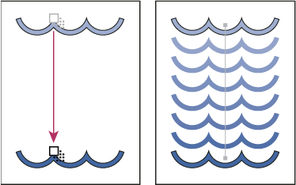

About blended objects
You can blend objects to create and distribute shapes evenly between two objects. You can also blend between two open paths to create a smooth transition between objects, or you can combine blends of colors and objects to create color transitions in the shape of a particular object.
Once you create a blend, the blended objects are treated as one object. If you move one of the original objects, or edit the original object’s anchor points, the blend changes accordingly. In addition, the new objects blended between the original objects don’t have their own anchor points. You can expand the blend in order to divide the blend into distinct objects.

The following rules apply to blended objects and their associated colors:
-
You cannot blend between mesh objects.
-
If you blend between one object painted with a process color and another object painted with a spot color, the blended shapes are painted with a blended process color. If you blend between two different spot colors, process colors are used to paint the intermediate steps. If, however, you blend between tints of the same spot color, the steps are all painted with percentages of the spot color.
-
If you blend between two patterned objects, the blended steps will only use the fill of the object on the topmost layer.
-
If you blend between objects that have blending modes specified with the Transparency panel, the blended steps will only use the blending mode of the top object.
-
If you blend between objects with multiple appearance attributes (effects, fills, or strokes), Illustrator attempts to blend the options.
-
If you blend between two instances of the same symbol, blended steps will be instances of that symbol. If, however, you blend between two instances of different symbols, the blended steps will not be symbol instances.
-
By default, blends are created as knockout transparency groups, so that if any of the steps consist of overlapping transparent objects, these objects will not show through each other. You can change this setting by selecting the blend and deselecting Knockout Group in the Transparency panel.